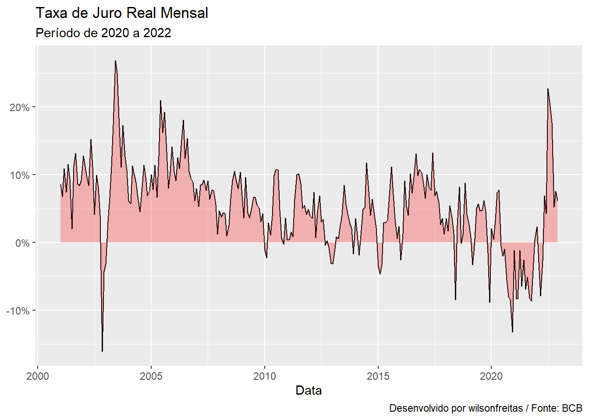
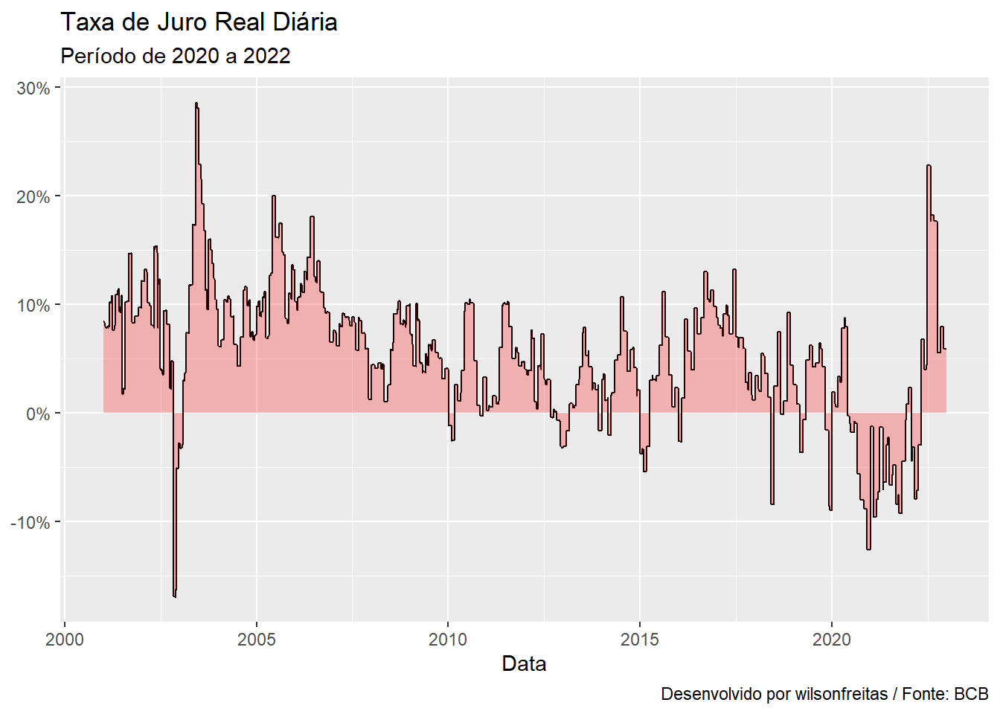
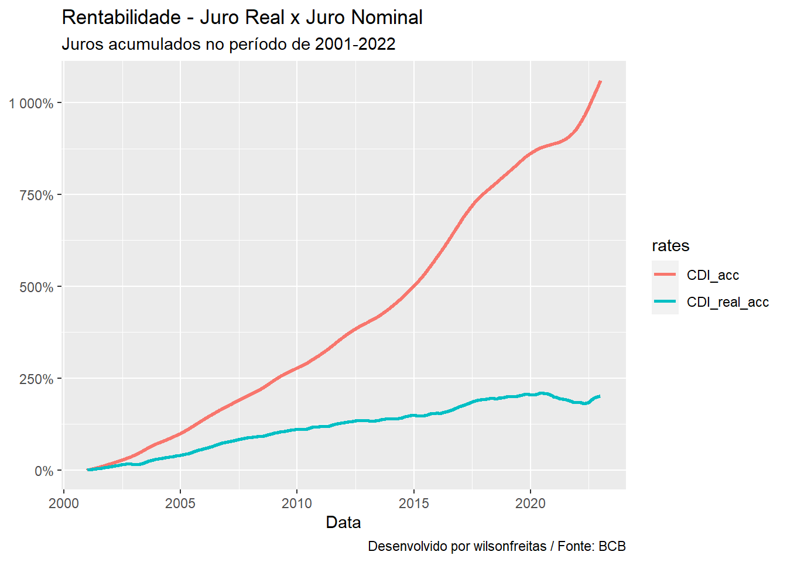
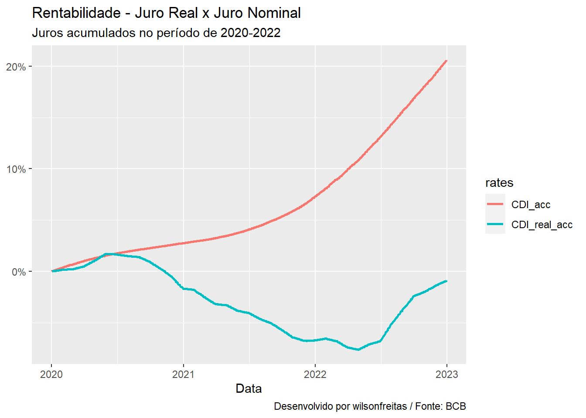
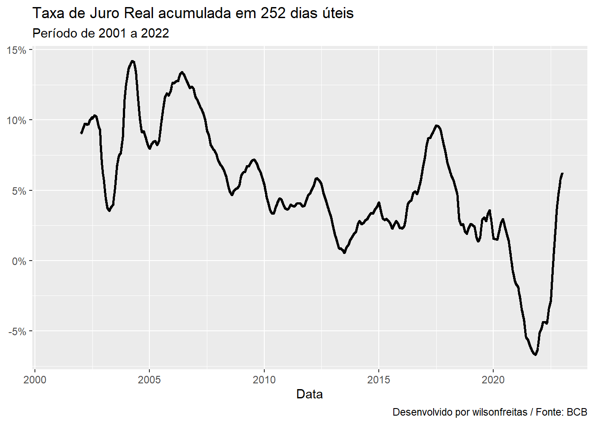

library(rbcb)
library(bizdays)
library(tidyverse)A análise de investimentos no Brasil gira muito em torno de produtos indexados às taxas básicas de juros, Taxa DI e SELIC. Estas são taxas de juros nominais, ou seja, não consideram a inflação corrente. Muitas vezes a discussão sobre taxas nominais é míope, dado que a inflação corroe a rentabilidade obtida.
A taxa de juros importante para a economia é a taxa de juro real, que é a taxa de juros acima da inflação corrente. Esta sim deveria ser a medida de referência para avaliação de rentabilidade de investimentos.
Vamos ver aqui como calcular a taxa de juros real e para isso utilizaremos a Taxa DI (CDI) como taxa de juros nominal e o IPCA como índice de inflação. Os valores obtidos podem ser um pouco diferentes caso a taxa SELIC seja utilizada como taxa nominal. Uma alternativa é utilizar outro índice de inflação, como o IGP-M, e neste caso os resultados podem ser bem diferentes em alguns períodos. A escolha do índice de inflação deve refletir as premissas dos agentes. Há indivíduos mais sensíveis aos fatores refletidos pelo pelo IGP-M, como custo de aluguel, por exemplo. Para estes indivíduos faz mais sentido a alternativa pelo IGP-M. Vamos seguir com o IPCA por ser o índice mais utilizado no mercado para se avaliar a inflação.
A função rbcb::get_series será utilizada para obter as séries de CDI e IPCA a partir do serviço de séries temporais do Banco Central (BCB). É necessário conhecer os códigos das séries no SGS (Sistema de Gerenciador de Séries Temporais) mantido pelo BCB. Isso é meio mala, mas não tem jeito, é preciso conhecer os códigos numéricos ou fazer uma busca no site do SGS para obter os códigos. A série do IPCA é mensal, por este motivo vou utilizar a série mensal do CDI, pra facilitar a conta mesmo, assim não é necessário calcular o IPCA diário.
series_ <- get_series(
c(CDI = 4391, IPCA = 433),
start_date = "2001-01-01", end_date = "2022-12-31"
)As séries baixadas estão em percentual, de forma que é necessário efetuar a divisão por 100 para ter as séries unidades decimais.
cdi <- series_$CDI |>
mutate(CDI = CDI / 100)
ipca <- series_$IPCA |>
mutate(IPCA = IPCA / 100)
rates <- left_join(cdi, ipca, by = "date")
rates |> head()# A tibble: 6 × 3
date CDI IPCA
<date> <dbl> <dbl>
1 2001-01-01 0.0126 0.0057
2 2001-02-01 0.0101 0.0046
3 2001-03-01 0.0125 0.0038
4 2001-04-01 0.0118 0.0058
5 2001-05-01 0.0133 0.0041
6 2001-06-01 0.0127 0.0052De posse da inflação mensal \(i\) e da taxa de juros mensal \(r\) é só descontar a taxa de juros pela inflação de acordo com a equação abaixo.
\[ 1 + j = \frac{1 + r}{1 + i} \]
Essa equação resulta na taxa de juro real mensal \(j\), dado que todas as taxas de juros na equação são mensais. Entretanto eu só entendo taxas de juros anualizadas, assim eu consigo comparar com as demais taxas da economia, que são todas anuais. Para converter em taxa anual faz-se a seguinte conta.
\[ j_a = (1 + j)^{12} - 1 \]
\(j_a\) é a taxa de juro real anualizada. Bem, entendidas as equações, vamos aplicá-las.
rates <- rates |>
mutate(
CDI_real = ((1 + CDI) / (1 + IPCA)) - 1,
CDI_real_annu = (1 + CDI_real) ^ 12 - 1,
)Calculadas as taxas de juros reais é interessante visualizá-las para conhecer a sua dinâmica com o passar dos anos.
rates |>
ggplot(aes(x = date, y = CDI_real_annu)) +
geom_line() +
geom_area(fill = "red", alpha = 0.25) +
scale_y_continuous(labels = scales::percent) +
labs(
x = "Data", y = NULL,
title = "Taxa de Juro Real Mensal",
subtitle = "Período de 2020 a 2022",
caption = "Desenvolvido por wilsonfreitas / Fonte: BCB"
)
Até aqui realizamos o trabalho fácil, aplicar fórmulas para calcular a taxa de juro real a partir da taxa de juro nominal e da inflação corrente. Como todas as taxas de juros utilizadas eram taxas mensais, não foi necessário realizar conversões nas taxas. Contudo, a vida não é tão simples assim, no mundo real as taxas de juros, Taxa DI e SELIC, são divulgadas diariamente. Como a inflação é divulgada com frequência mensal é necessário transformar a inflação mensal em inflação diária. Vamos realizar esses cálculos abaixo.
series_ <- get_series(
c(CDI = 12, IPCA = 433),
start_date = "2001-01-01", end_date = "2022-12-31"
)Utilizando o cógigo 12 para a Taxa DI, que retorna a Taxa DI ao dia, não é preciso converter a taxa anual para taxa diária.
cdi <- series_$CDI |>
mutate(CDI = CDI / 100)
ipca <- series_$IPCA |>
mutate(
date = following(date, "Brazil/ANBIMA"),
IPCA = IPCA / 100
)Realizamos um ajuste nas datas de inflação, como os dados são mensais, a data utilizada é o primeiro dia de cada mês, contudo, as taxas CDI são divulgadas em dias úteis e em diversos meses o dia 1 do mês não é um dia útil. A função bizdays::following faz exatamente o ajuste que precisamos, se a data passada for um dia útil, segundo o calendário informado, a própria data é retornada, caso contrário, o primeiro dia útil após essa data é retornado.
Com as datas ajustadas podemos juntar os datasets.
rates <- left_join(cdi, ipca, by = "date")Para calcular a inflação diária a partir da inflação mensal, vamos criar um índice que represente o mês corrente e quebrar o dataset em blocos com dados mensais e nestes blocos vamos realizar os cálculos para encontrar: a inflação diária, a taxa de juro real e a taxa de juro real anual, pois agora estamos trabalhando com dados diários e como já disse, só consigo avaliar taxas de juros anuais.
rates <- rates |>
mutate(month = format(date, "%Y-%m"))
rates <- split(rates, rates$month) |>
map_dfr(function(df) {
dt <- nrow(df)
df["IPCA_daily"] <- (1 + df$IPCA[1]) ^ (1 / dt) - 1
df["CDI_real"] <- (1 + df$CDI) / (1 + df$IPCA_daily) - 1
df["CDI_real_annu"] <- (1 + df$CDI_real) ^ 252 - 1
df
})Após calcular as taxas de juros, vou colocar em um gráfico para observar a sua dinâmica na série histórica.
rates |>
ggplot(aes(x = date, y = CDI_real_annu)) +
geom_line() +
geom_area(fill = "red", alpha = 0.25) +
scale_y_continuous(labels = scales::percent) +
labs(
x = "Data", y = NULL,
title = "Taxa de Juro Real Diária",
subtitle = "Período de 2020 a 2022",
caption = "Desenvolvido por wilsonfreitas / Fonte: BCB"
)
Tendo ambas as séries, de juro real e nominal, é interessante observar o impacto da inflação para a rentabilidade no período.
Vamos começar a análise filtrando a partir de 2001.
rates |>
filter(date >= as.Date("2001-01-01")) |>
mutate(
CDI_acc = cumprod(1 + CDI) - 1,
CDI_real_acc = cumprod(1 + CDI_real) - 1,
) |>
select(date, CDI_acc, CDI_real_acc) |>
tidyr::pivot_longer(c(CDI_acc, CDI_real_acc),
names_to = "rates"
) |>
ggplot(aes(x = date, y = value, colour = rates)) +
geom_line(size = 1) +
scale_y_continuous(labels = scales::percent) +
labs(
x = "Data", y = NULL,
title = "Rentabilidade - Juro Real x Juro Nominal",
subtitle = "Juros acumulados no período de 2001-2022",
caption = "Desenvolvido por wilsonfreitas / Fonte: BCB"
)Warning: Using `size` aesthetic for lines was deprecated in ggplot2 3.4.0.
ℹ Please use `linewidth` instead.
Em 20 anos o efeito da inflação é devastador na rentabilidade no período. Vou dar um zoom a partir de 2020, o ano da pandemia de COVID-19.
rates |>
filter(date >= as.Date("2020-01-01")) |>
mutate(
CDI_acc = cumprod(1 + CDI) - 1,
CDI_real_acc = cumprod(1 + CDI_real) - 1,
) |>
select(date, CDI_acc, CDI_real_acc) |>
tidyr::pivot_longer(c(CDI_acc, CDI_real_acc),
names_to = "rates"
) |>
ggplot(aes(x = date, y = value, colour = rates)) +
geom_line(size = 1) +
scale_y_continuous(labels = scales::percent) +
labs(
x = "Data", y = NULL,
title = "Rentabilidade - Juro Real x Juro Nominal",
subtitle = "Juros acumulados no período de 2020-2022",
caption = "Desenvolvido por wilsonfreitas / Fonte: BCB"
)
Neste intervalo tivemos juros reais negativos por um longo período, fica evidente o efeito dos juros negativos, um longo período de rentabilidade negativa.
Outra coisa que me chama a atenção para dinâmica da taxa de juro real é o comportamento da taxa acumulada no período de 1 ano. Uma análise de janela móvel, onde a taxa diária é acumulada em períodos de 252 dias.
rates |>
mutate(
roll_CDI_real = c(
rep(NA, 251),
zoo::rollapply(CDI_real, 252, function(x) prod(1 + x) - 1)
),
) |>
ggplot(aes(x = date, y = roll_CDI_real)) +
geom_line(size = 1) +
scale_y_continuous(labels = scales::percent) +
labs(
x = "Data", y = NULL,
title = "Taxa de Juro Real acumulada em 252 dias úteis",
subtitle = "Período de 2001 a 2022",
caption = "Desenvolvido por wilsonfreitas / Fonte: BCB"
)
Interessante observar como o efeito da janela móvel suaviza a curva. No período de 2001 a 2010 tivemos taxas bem elevadas, que começaram uma trajetória de queda que durou até 2016, quando a coisa toda zoou de vez. Após 2020 foi só desgraça. Curioso observar que não tem período tranquilo, a taxa sobe rápido e também cai rápido, importante ressaltar que essa é a taxa acumulada em 12 meses, talvez fosse interessante e s perar um comportamente mais estável para esse número.